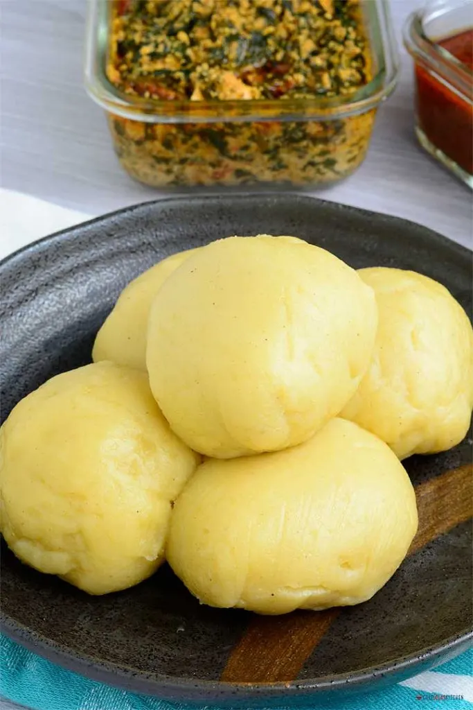

Fufu

Description
Ingredients
- 1 Yuca root cassava
- 1 plantain Green
- ¼ cup water
Instructions for the batter
- Peel the cassava, slice the tuber half lengthwise, remove the inner wooden core, and dice the potatoes into small cubes.
- Peel the plantain and cut it into small cubes.
- Add everything inside the blender and blend till a smooth batter is formed.
Stovetop method
- Pour the batter into a pot, place it on the stovetop over medium heat and begin stirring until a thick, paste-like doughy fufu is formed.
- Add a splash of water, cover, and leave to cook for 5 minutes on low to medium heat. Feel free to cook a little longer if you feel the fufu is not yet cooked. Stir well.
- Divide the fufu into individual sizes and wrap each with plastic wrap.
- Serve with your desired soup or stew.
Microwave method
- Pour the batter inside a safe microwave bowl, cover with a microwave-safe lid. Place in the microwave for 5 minutes.
- stir well until smooth.
- Add a splash of water and return inside the microwave to cook till fully done—about 5 to 8 minutes.
- Stir again, divide into individual sizes and wrap each with plastic wrap.
- Serve with your desired soup or stew.